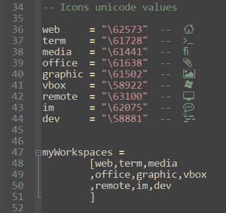

Иконки для рабочих столов xmonad в xmobar
Какие имена у моих рабочих столов в xmonad, и в какой последовательности они расположены, я уже давно запомнил. Поэтому отображение имени рабочего стола в xmobar для меня стало лишней информацией. Было принято решение заменить имена столов на иконки, тем самым увеличить полезную площадь xmobar.
Для иконок мне понадобился шрифт, в котором они есть. Вариантов много, я у себя использую шрифт Terminus Re33 Nerd. Чтобы определить коды иконок, можно воспользоваться вот этим ресурсом.
После того как мы определили коды для всех наших выбранных иконок, вносим изменения в файл xmonad.hs:

И теперь нужно прописать наш шрифт в файле .xmobarrc:
Config { font = "xft:Terminus Re33 Nerd:size=14:weight=bold:antialias=true:hinting=true"
, additionalFonts = [ "xft:Terminus Re33 Nerd:size=14:weight=bold:antialias=true:hinting=true" ]
, ...После всех этих изменений в xmobar у нас будут отображаться иконки рабочих столов, вместо их названий: